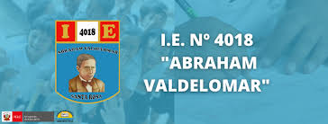

Tu mejor opción para educación de primaria y secundaria.
Explora nuestras instalaciones y descubre lo que tenemos para ofrecer a nuestros estudiantes.
El colegio I.E. № 4018 Abraham Valdelomar fue creado en 1973, ofreciendo una educación integral que forma a los líderes del mañana.
En la etapa de primaria, nos enfocamos en el desarrollo de habilidades fundamentales a través de una metodología activa y participativa.
Durante la secundaria, los estudiantes se preparan para los desafíos académicos y vocacionales a través de un enfoque crítico y analítico.
Descarga el calendario académico con las fechas importantes de este año.
Contáctanos:
Señora Mirtha: +51 993 919 324
Señora Verónica: +51 957 970 869